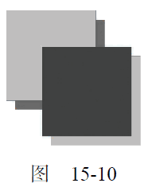

var context = drawing.getContext("2d");
//设置阴影
context.shadowOffsetX = 5;
context.shadowOffsetY = 5;
context.shadowBlur = 4;
context.shadowColor = "rgba(0, 0, 0, 0.5)";
//绘制红色矩形
context.fillStyle = "#ff0000";
context.fillRect(10, 10, 50, 50);
//绘制蓝色矩形
context.fillStyle = "rgba(0,0,255,1)";
context.fillRect(30, 30, 50, 50);
① 请读者注意，虽然本章至今一直在讨论2D 绘图上下文，但toDataURL()是Canvas 对象的方法，不是上下文对象的方法。
两个矩形的阴影样式相同，结果如图15-10 所示。

不同浏览器对阴影的支持有一些差异。IE9、Firefox 4 和Opera 11 的行为最为规范，其他浏览器多多少少会有一些奇怪的现象，甚至根本不支持阴影。